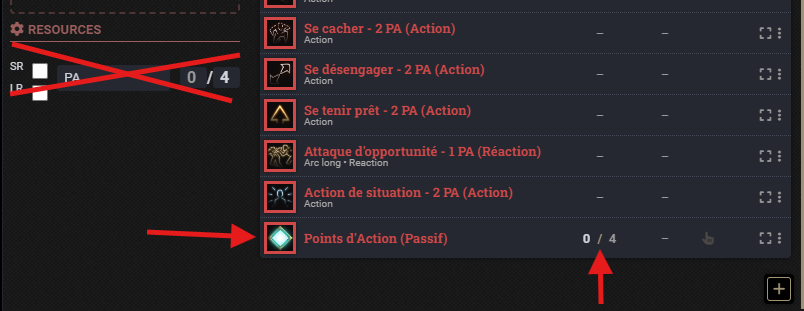
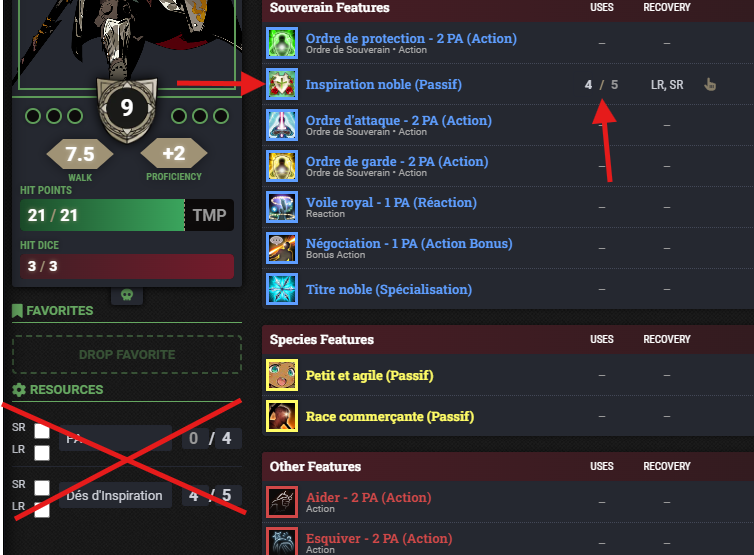
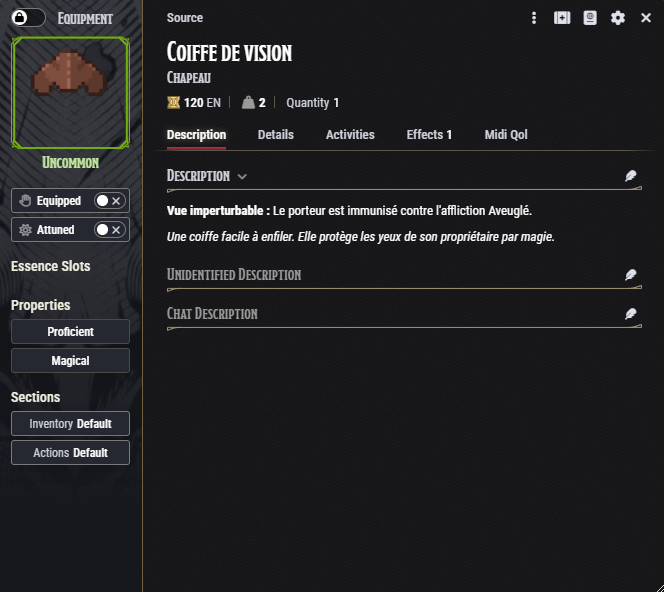
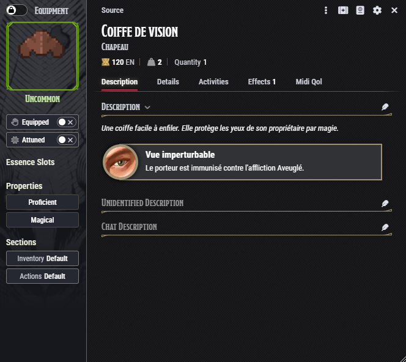
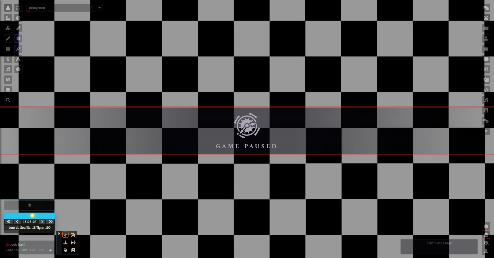
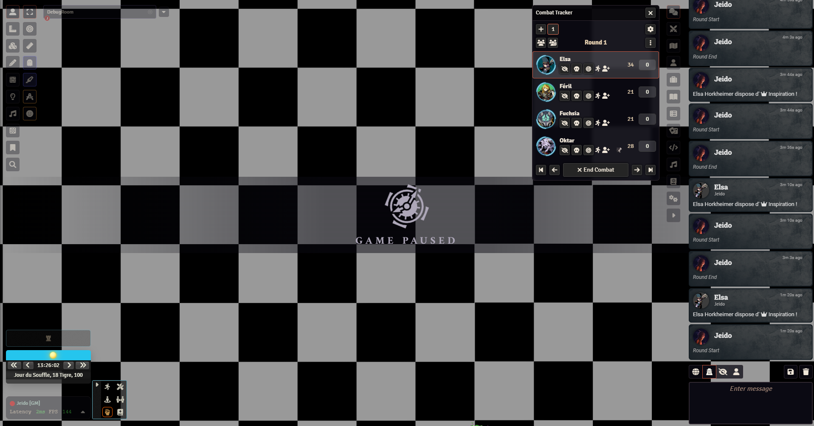
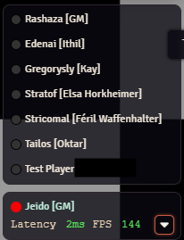
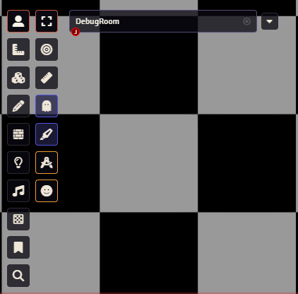

Patch 2.6 – Session 15
Patch 2.6 – Session 15
 Système
Système
 Le client utilisé pour se connecter à Foundry a subi une refonte majeure. Vous pouvez le télécharger ici.Il s'agit d'une version mise à jour du tout premier client que nous utilisions. J’en ai repris le développement, celui-ci étant abandonné, afin d’en assurer la maintenance et d’avoir un contrôle total sur les fonctionnalités ajoutées, les mises à jour, et la correction rapide des bugs.Des problèmes d'affichage avaient poussé certains à utiliser un autre client, divisant ainsi le groupe en deux environnements différents. Ce n'est pas bloquant actuellement, mais la prochaine mise à jour majeure de Foundry entraînera des changements techniques importants. Par exemple, le client que je maintiens n’était même pas compatible avant que je ne mette à jour tous ses composants. Il est donc recommandé que tout le groupe migre vers ce client d’ici la sortie de Foundry v13. En cas de bug, je pourrai ainsi appliquer un correctif valable pour tout le monde.Il est maintenant possible de changer le thème du client. Pour l'instant, 2 thèmes sont disponibles, Codex et Original. Le thème Codex reprend le thème du site Internet de la campagne, est visuellement plus soigné mais consomme plus de ressources, tandis que le thème Original est fidèle au thème d'origine du client, et très léger en utilisation de ressources.Il est désormais possible de changer le thème du client. Deux thèmes sont disponibles : Codex (plus esthétique mais plus gourmand) et Original (plus léger).Les informations et le statut des serveurs sont affichés sous leur nom.Des notifications ont été ajoutées.De nombreuses améliorations ont été apportées à l'interface et à l’ergonomie pour en faciliter l’usage.Une intégration avec Discord est en cours de développement !
Le client utilisé pour se connecter à Foundry a subi une refonte majeure. Vous pouvez le télécharger ici.Il s'agit d'une version mise à jour du tout premier client que nous utilisions. J’en ai repris le développement, celui-ci étant abandonné, afin d’en assurer la maintenance et d’avoir un contrôle total sur les fonctionnalités ajoutées, les mises à jour, et la correction rapide des bugs.Des problèmes d'affichage avaient poussé certains à utiliser un autre client, divisant ainsi le groupe en deux environnements différents. Ce n'est pas bloquant actuellement, mais la prochaine mise à jour majeure de Foundry entraînera des changements techniques importants. Par exemple, le client que je maintiens n’était même pas compatible avant que je ne mette à jour tous ses composants. Il est donc recommandé que tout le groupe migre vers ce client d’ici la sortie de Foundry v13. En cas de bug, je pourrai ainsi appliquer un correctif valable pour tout le monde.Il est maintenant possible de changer le thème du client. Pour l'instant, 2 thèmes sont disponibles, Codex et Original. Le thème Codex reprend le thème du site Internet de la campagne, est visuellement plus soigné mais consomme plus de ressources, tandis que le thème Original est fidèle au thème d'origine du client, et très léger en utilisation de ressources.Il est désormais possible de changer le thème du client. Deux thèmes sont disponibles : Codex (plus esthétique mais plus gourmand) et Original (plus léger).Les informations et le statut des serveurs sont affichés sous leur nom.Des notifications ont été ajoutées.De nombreuses améliorations ont été apportées à l'interface et à l’ergonomie pour en faciliter l’usage.Une intégration avec Discord est en cours de développement !- Le système de ressources de D&D5e a été abandonné. Les PA et autres ressources (comme les dés d'Inspiration du Souverain) ont été convertis en aptitudes à charges.  (Cliquez sur les images pour les agrandir)Ce changement provient du fait que le système de ressources est considéré obsolète depuis un certain temps, et sera possiblement abandonné dans une future mise à jour.Normalement, ce changement n'aura aucune incidence du côté des joueurs car l'utilisation de ce nouveau système se fait exactement de la même façon qu'avant.Cependant, il se peut tout de même que des problèmes surviennent si une ou plusieurs aptitudes n'ont pas été converties au nouveau système par oubli.Le bloc "Ressources" de la fiche de personnage a été masqué.Lorsqu’une ressource est consommée, son nom est désormais affiché correctement (ex : "Points d'Action (Passif)") au lieu de son identifiant interne.
- L’interface "Baldur’s Gate 3" a été mise à jour.Les infobulles adoptent désormais le style D&D5e.L'éditeur de thème est disponible.
- Les effets magiques d'objets ou d'enchantements sont désormais mieux mis en évidence sur leur fiche. Ce nouveau style sera progressivement appliqué aux objets existants. A noter que ces encarts n'apparaissent pas dans les info-bulles ni dans le tchat, par souci de place.  (Cliquez sur les images pour les agrandir)
- Les entals d'Eris ne sont plus comptabilisés dans le total du groupe.
- Une activité "Réaction" a été ajoutée à l’aptitude "Se tenir prêt", pour représenter le déclenchement de l’action définie à son activation.
- Deux nouvelles apparences de dés ont été ajoutées : "Ancient Temple White" et "Gold Ore".
Petites notes...
- Je vais temporairement sortir de la persona "patch notes sérieux" pour vous parler un peu de la technique derrière Foundry VTT. Si cet aspect ne vous intéresse pas, vous pouvez cliquer ici pour poursuivre votre lecture des notes. Deux mises à jour majeures sont disponibles sur Foundry. D'un côté, le logiciel Foundry VTT lui-même passe à sa v13, et de l'autre, le système de jeu D&D5e passe à sa v5. Elles auront un fort impact, notamment la v13 qui revoit entièrement l'interface. L'écosystème que nous avons bâti autour de ces deux systèmes est à l'heure actuelle robuste. Nous utilisons pas moins de 170 modules, ce qui, dans la communauté Foundry, est considéré comme un chiffre très élevé. Pourtant, hormis les quelques erreurs très occasionnelles, le système tourne bien, et surtout, tous les cas de figures et règles spéciales que nous utilisons pour l'instant sont représentées dans le jeu, grâce à ceux-ci. Évidemment, nous dépendons plus de certains que d'autres, là où certains sont seulement là pour améliorer l'ergonomie générales, d'autres changent complètement le fonctionnement des règles d'origine. Et évidemment, une mise à jour de cette envergure va inévitablement entraîner des incompatibilités, certaines temporaires, d'autres malheureusement permanentes, en cas d'abandon des modules par leurs auteurs. Je tenais à vous rassurer en vous indiquant que le projet ne passera à la v13/v5 que lorsque tous les modules dont nous dépendons seront compatibles avec. Bien que je sois excité à l'idée de réaliser ces mises à jour, la priorité du projet, d'un point de vue technique, est et restera toujours la fluidité du système côté joueurs. Ceci dit, je vois aussi cela comme une occasion de faire un ménage dans les modules les moins utilisés, ou ceux qui seront remplacés par des fonctionnalités natives, afin d'alléger la charge sur le système. Comme je l'avais fait avec la v12/v4, je mène des tests sur une copie dédiée du projet afin d'assurer une migration en douceur. J’ai d’ailleurs déjà commencé à tester la version stable de la v13, sortie récemment. Comme prévu, de nombreux bugs sont présents (liés à l’incompatibilité des modules), mais je souhaitais quand même vous donner un aperçu visuel de la nouvelle interface, avant de repartir sur les notes. Si vous avez lu jusqu'ici, merci !   
(Cliquez sur les images pour les agrandir)
Races
 Vaisseau
Vaisseau
- L'aptitude Étreinte de la nature consomme désormais correctement une utilisation par long repos.
Classes
 Lansquenet
Lansquenet
- L'aptitude Tranchant furieux consomme désormais correctement 1 PA à l'activation.
 Shogun
Shogun
- L'aptitude Parade augmente désormais la Défense de 1 + la moitié du modificateur de Force, au lieu de simplement +1.Ce changement a été effectué car nous trouvons que le Shogun prends trop de risques en se positionnant au corps à corps. Ce changement devrait lui permettre de mieux rivaliser en Défense avec ses alliés plus solides tout au long de sa progression, tout en respectant l'idée originale de la classe limitée à l'armure légère.
- L'aptitude Hirondelles jumelles fonctionne à nouveau comme prévu.
Codex
- La bannière en haut de l’écran est désormais cliquable et renvoie à la page d’accueil.
- Les dés de vie restants et maximum ont été ajoutés sur les fiches des personnages.
- Il est désormais possible de modifier ses disponibilités via le tableau, en envoyant de nouvelles infos avec le même nom d’utilisateur.
- Les biographies d’Ithil et Féril ont été réécrites pour refléter leur changement de classe.
Problèmes résolus
- Le type d’action n’apparaît plus sous forme d’identifiant technique ("GNRC5cNHKQLVPLYd") dans l’interface "Baldur’s Gate 3".
MJ
- Une option a été ajoutée pour afficher des objets dans le tchat depuis la barre latérale ou les compendiums.